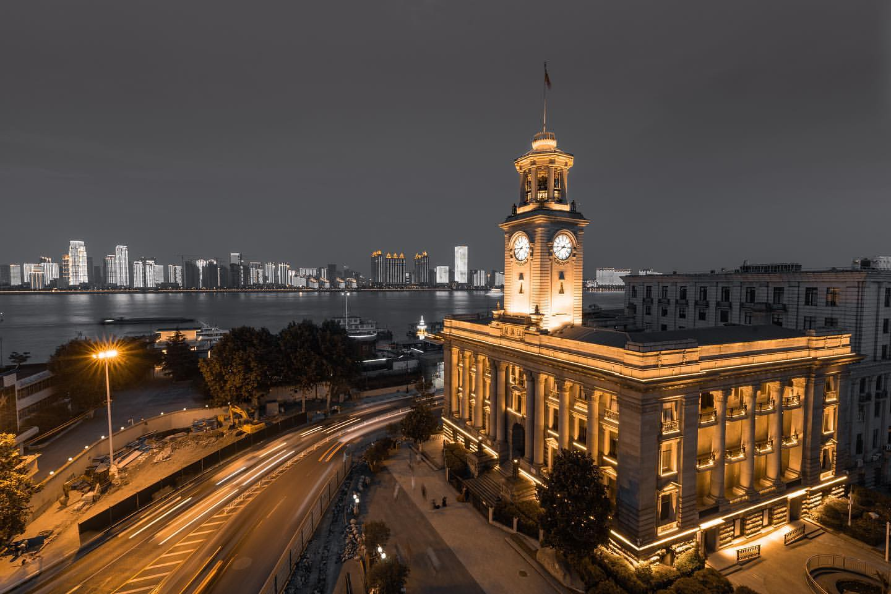
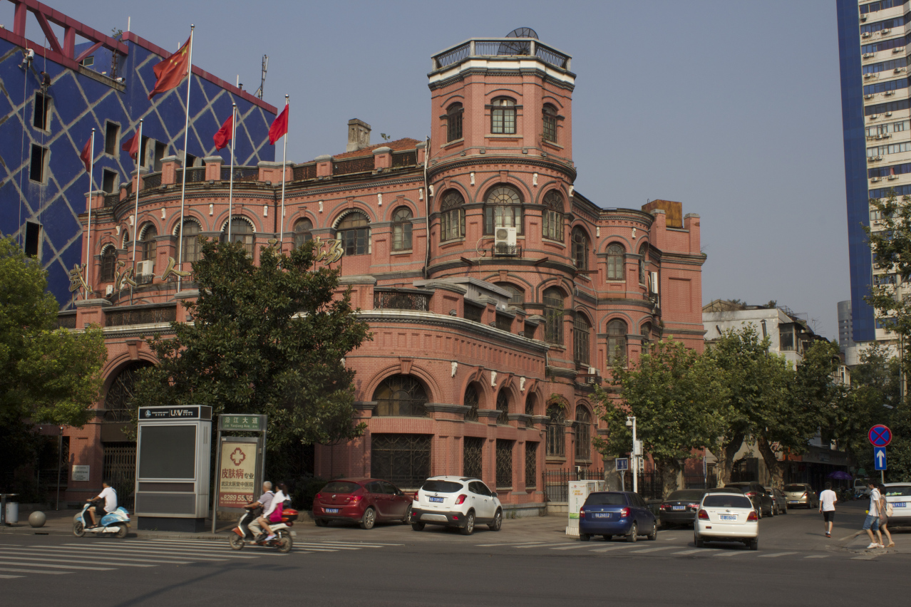

My hometown Wuhan is a huge metropolis in central China.
It's a huge metropolis located on the Yangtze River's intersection with the Han river.
The proudest history event of Wuhan is the 1911 Wuchang Uprising. This rebellion successfully overthrew the five thousands years of Chinese imperial rule system and established a republic government.
Know more about WUHAN from Wikipedia
The city is divided by rivers and lakes, there are many bridges in the city.
City Symbol: The first bridge ever built across the Yangtze
Traditional Breakfest: Salty doughnut, Mung bean soup, and Hot Dry Noodles(noodles with sesame sauce)

Zhiyin Cruise

The loss of the Second Opium War (known in the West as the Arrow War, 1856–1860), the UK forces China to stipulated Wuhan as trading ports.
The first concession in Wuhan, the British concession, opened in the spring of 1861.
Later, four more concessions were added (French, Russian, German, and Japanese).
The buildings in the concessions mark the past shame colonial time and exotic in this Chinese city.
Hankow Customs House(1924) | Renaissance style
Former American Consulate(1905) | Baroque style

Old Citibank Building(1921) | Classical style
<...>